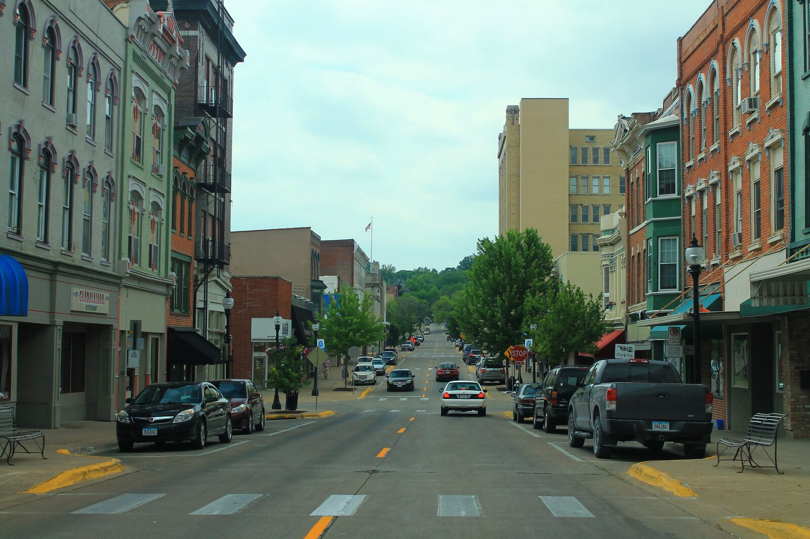

Belong to something with a job to do.
$GIVE is a gathering point for people who want crypto to have something useful to show for itself. Holders can contribute ideas, attention, and scrutiny.
A crypto community. A media business. A common goal.
Our ambition is to find the most effective use of a dollar in the world. Glimpse is finding out in public, one undertaking at a time.
Our ambition is to find the most effective use of a dollar in the world.
Glimpse starts with a smaller, answerable question: can a community turn shared belief into help that reaches people—and show what it took?
We'll start with specific needs. Work with local businesses. Publish the costs and results. Then use what we learn to choose the next problem.
Why it matters: about 19% of first-time donors ever give a second time. Not because they stopped caring. Because nobody showed them what happened. charity: water publishes a GPS pin and a photo for every project it funds.
Explore what connects the community to the work—and the work to the record.
$GIVE is a gathering point for people who want crypto to have something useful to show for itself. Holders can contribute ideas, attention, and scrutiny.
A practical service. A participating business. A clear undertaking. Help that can be described before it happens and accounted for afterward.
Show the spending, the delivery, and anything unfinished. Footage helps tell the story; receipts and payment records explain the money. Protect recipients' identities.
Glimpse is building a media business around a mission.
The event is real work. The show and clips let people follow it. Local businesses can advertise to reach that audience.
That is the business model we're developing: work worth following, an audience worth reaching, and clearly disclosed advertising.
A live show gives the undertaking context. The event record keeps the commitments, spending, and evidence together.
Clips carry individual stories beyond the live show. Each should lead back to the event and its record.
Businesses can pay for clearly disclosed advertising. That is company revenue.
Advertising is company revenue. $GIVE creator fees are paid to Derrick as his personal income, and he spends them on the undertakings himself. Both are distinct from contributions toward a specific need.
Individual contributions are intended for a specific recipient or need, with a transparent record of the money and delivery. Details will be revealed during the October 31 livestream.
The first three months are a test of the mission.
Specific events. A record for each. Room to learn.
Practical help, starting with oil changes in Muscatine, Iowa. Participating providers, service scope, and event time will be announced.
Contributions open at this event, explained on the stream first.
Open Event 01 ↗A Thanksgiving undertaking is planned. The specific help, participating businesses, date, and scope will be published once confirmed.
Teacher appreciation is planned for December. The form of support, selection approach, and scope remain to be announced.
The event will have its own account of spending and delivery.
We plan to invite holders to help shape the next focus: continue supporting public school employees, address another need, or pursue a combination.
Read how decisions will work ↓
Muscatine is the first place we'll put this to work. The first event is planned for October 31.
When the work happens, this record will hold the people who helped make it possible, the spending, what was delivered, and what remains unfinished.
The first undertaking ↗Inspect what is known today ↗A common goal can hold a community together without pretending every answer is settled.
Bring ideas. Introduce a business. Follow the work. Ask difficult questions about the record. The community's role should be more than watching.
Join the conversation ↗Business advertising inquiries
derrick@giveglimpse.com
We plan to invite holder input on the next focus in January 2027. The specifics remain open while we seek regulatory clarity and legal guidance. No binding voting or ownership rights are promised.
Derrick retains final responsibility for company spending and execution. The aim is to publish community input, the chosen direction, and the reasons behind it.
Creating a nonprofit or partnering with an existing one are options being explored. Neither route is confirmed. Glimpse is currently a media business.
We will need to show the full cost, what was delivered, whether it met the intended need, and what we learned. “Most effective” is the ambition, not a verified ranking.
.jpg){kind=link}